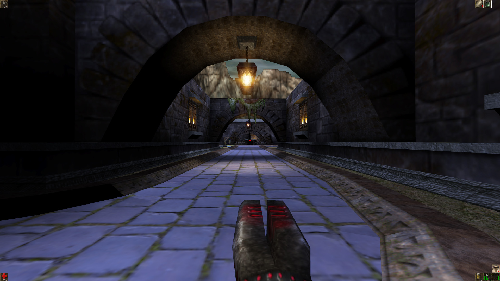
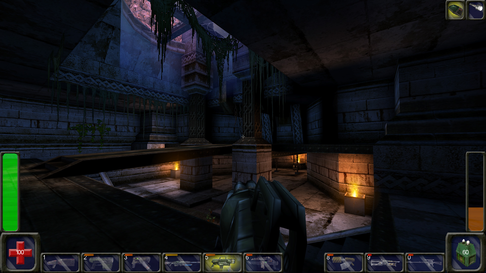
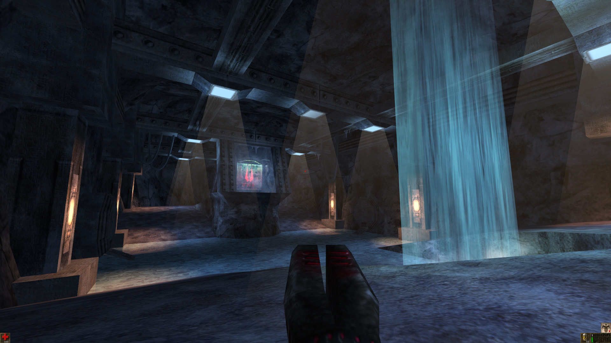
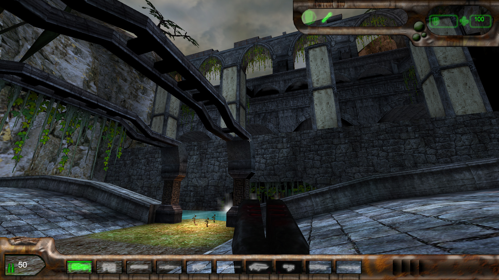
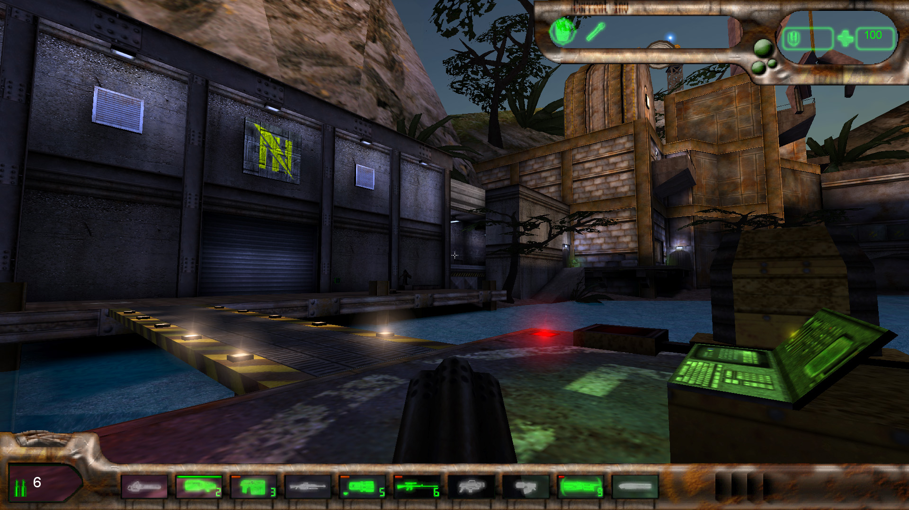
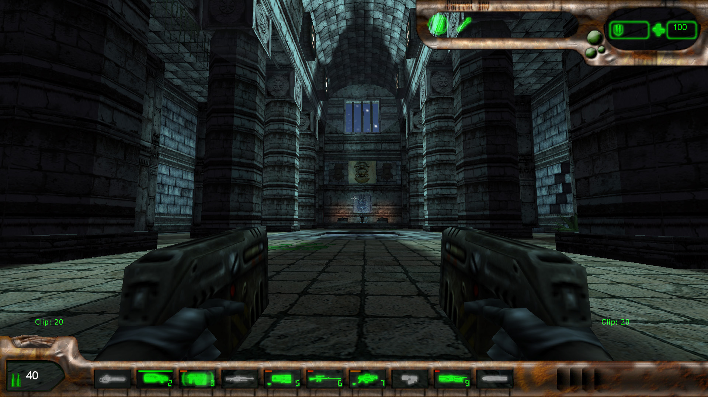
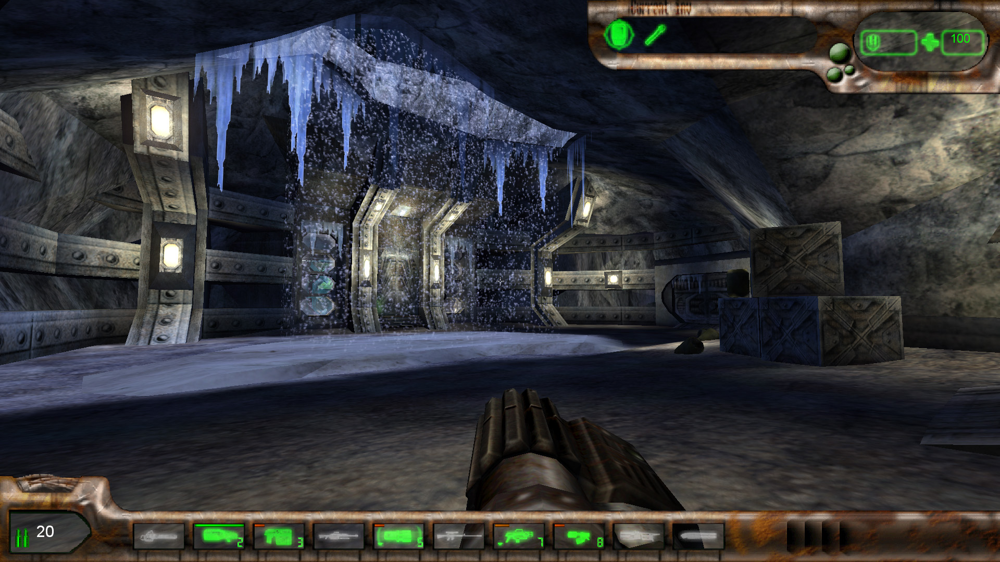

Botpack227
Overview
Introduction
Botpack227 is a bundle of game packages that allows playing a limited subset of Unreal Tournament maps on Unreal 227 and resolves various related issues.
Supported mapsets
| Mapset | Created by | Single-player | Coop |
|---|---|---|---|
| Crazy for Fight 3 | Tatuyuki / TA19 / TA20 | ✓ | ✓ |
| Déjà Vu - Gryphon Revisited | Team UnrealSP | ✓ | ✓ |
| Nali Chronicles | NCTeam | partially | partially |
| Operation Na Pali | Team Vortex | ✓ | ✓ |
| Project Xenome (2009) | Jarrod “Jazzyb” Burgess | ✓ | ✓ |
| Project Xenome: First Day | ✓ | ✓ | |
| Project Xenome: Interloper | ✓ | ✓ | |
| Project Zephon: Battle for Freedom | Team Zephon | ✓ | ✓ |
| Return the Heart | Rob “Doublez-Down” Collins | ✓ | ✓ |
| Seven Bullets | Team Red Nemesis | ✓ | ✓ |
| The Odyssey | Sarevok | ✓ | ✓ |
| Unreality Episode One | Dmitry “Tygra” Gribanoff | ✓ | ✓ |
| Xidia Gold | Team Phalanx | ✓ | ✓ |
Installation
The recommended way to make UT maps playable on Unreal 227 is to specify paths to related files in 227's Unreal.ini.
Let's suppose that
- the base game directory of Unreal 227 is U227_GAME_DIR (e.g., D:\Games\Unreal227);
- the base directory of Unreal Tournament is UT_GAME_DIR (e.g., D:\Games\UnrealTournament);
- UT map sets are installed in directory UT_MODS_DIR (e.g., D:\Games\UnrealTournament\Mods);
- directory B227_MODS_DIR (e.g., D:\Games\Unreal227\UT_Mods) is the place where you're going to install the converted UT files to.
Then you can specify the following paths in section [Core.System] of U227_GAME_DIR\System\Unreal.ini (D:\Games\Unreal227\System\Unreal.ini):
Paths=B227_MODS_DIR\Music\*.umx
Paths=B227_MODS_DIR\Sounds\*.uax
Paths=B227_MODS_DIR\System\*.u
Paths=B227_MODS_DIR\Textures\*.utx
Paths=UT_GAME_DIR\Maps\*.unr
Paths=UT_GAME_DIR\Music\*.umx
Paths=UT_GAME_DIR\Sounds\*.uax
Paths=UT_GAME_DIR\System\*.u
Paths=UT_GAME_DIR\Textures\*.utx
Paths=UT_MODS_DIR\Maps\*.unr
Paths=UT_MODS_DIR\Music\*.umx
Paths=UT_MODS_DIR\Sounds\*.uax
Paths=UT_MODS_DIR\System\*.u
Paths=UT_MODS_DIR\Textures\*.utx
where placeholders B227_MODS_DIR, UT_GAME_DIR, and UT_MODS_DIR should be replaced with actual directory paths like these:
Paths=D:\Games\Unreal227\UT_Mods\Music\*.umx
Paths=D:\Games\Unreal227\UT_Mods\Sounds\*.uax
Paths=D:\Games\Unreal227\UT_Mods\System\*.u
Paths=D:\Games\Unreal227\UT_Mods\Textures\*.utx
Paths=D:\Games\UnrealTournament\Maps\*.unr
Paths=D:\Games\UnrealTournament\Music\*.umx
Paths=D:\Games\UnrealTournament\Sounds\*.uax
Paths=D:\Games\UnrealTournament\System\*.u
Paths=D:\Games\UnrealTournament\Textures\*.utx
Paths=D:\Games\UnrealTournament\Mods\Maps\*.unr
Paths=D:\Games\UnrealTournament\Mods\Music\*.umx
Paths=D:\Games\UnrealTournament\Mods\Sounds\*.uax
Paths=D:\Games\UnrealTournament\Mods\System\*.u
Paths=D:\Games\UnrealTournament\Mods\Textures\*.utx
If you don't have Unreal Tournament installed, it's possible to extract the contents of archive UT files for SP.7z to some directory and use it as UT_GAME_DIR instead.
If you prefer to use textures DecayedS.utx and SkyBox.utx from UT (which may look better than the original Unreal textures), it is recommended to copy these textures to B227_MODS_DIR and move the line
before the path to the original Unreal textures:
Paths=..\Textures\*.utx
Installing all supported campaigns and single maps at once
Installation of all the converted files can be done by taking the following steps:
- copy the contents of its subdirectories
- Botpack
- Misc
- oldskool
- Locate directory Files for campaigns and copy the contents of its subdirectories
- Crazy for Fight 3
- Deja Vu
- Nali Chronicles
- Operation Na Pali
- Project Xenome
- Project Zephon
- Seven Bullets
- Unreality Episode One
- Xidia Gold
- Locate directory Files for single maps and copy the contents of its subdirectory
- Enslaved
- If you want to see the mapsets in the list of single-player campaigns in the game menu, then copy all files from directory SP menu support\System to U227_GAME_DIR\System (e.g., D:\Games\Unreal227\System - see above).
It is also recommended to install and use mutator B227_MapFix when playing UT maps on Unreal 227i. B227_MapFix.ini should be placed in U227_GAME_DIR\System. In a Coop game, this mutator automatically adds ONPCoopMutator, SevenBCoopMutator, or XidiaCoopMutator for relevant campaigns. However, note that these mutators are supposed to be used only with generic Coop game classes (such as UnrealShare.CoopGame) and may not work well with game classes designed for specific UT campaigns (e.g., olextras.tvcoop).
In case if you want to install only a particular UT campaign, then follow the steps described below.
Crazy for Fight 3
- Copy the contents of directories
- Botpack
- Files for campaigns\Crazy for Fight 3
Déjà Vu - Gryphon Revisited
- Copy the contents of directories
- Botpack
- oldskool
- Files for campaigns\Deja Vu
- Copy file Misc\System\UMS.u to B227_MODS_DIR\System.
Nali Chronicles
- Copy the contents of directories
- Botpack
- Files for campaigns\Nali Chronicles
Operation Na Pali
- Copy the contents of directories
- Botpack
- Misc
- oldskool
- Files for campaigns\Operation Na Pali
Project Xenome
- Copy the contents of directories
- Botpack
- Misc
- oldskool
- Files for campaigns\Project Xenome
- Locate directory Files for campaigns and copy files
- Operation Na Pali\System\olextras.u
- Operation Na Pali\System\ONPCoopMutator.u
- Operation Na Pali\System\ONPSPFix.u
- Project Zephon\System\zpscripts.u
- Xidia Gold\System\XidiaMPack.u
Project Zephon: Battle for Freedom
- Copy the contents of directories
- Botpack
- oldskool
- Copy file Misc\System\UMS.u to B227_MODS_DIR\System.
- Copy file Files for campaigns\Project Zephon\System\zpscripts.u to B227_MODS_DIR\System.
Return the Heart
- copy the contents of directories
- Botpack
- oldskool
Seven Bullets
- Copy the contents of directories
- Botpack
- Misc
- oldskool
- Files for campaigns\Seven Bullets
The Odyssey
- Copy the contents of directories
- Botpack
- oldskool
Unreality Episode One
- Copy the contents of directories
- Botpack
- Misc
- oldskool
- Files for campaigns\Unreality Episode One
- Copy file Files for campaigns\Xidia Gold\System\XidiaMPack.u to B227_MODS_DIR\System
Xidia Gold
- Copy the contents of directories
- Botpack
- Misc
- oldskool
- Files for campaigns\Xidia Gold
Configuration
Reducing the amount of possible issues
It is highly recommended to disable 227's “enhanced sight check” for NPCs, because it may produce unintended behavior of AI. This can be done by executing console command
In a multiplayer game, it is recommended to use the UGoldFix mutator, which additionally resolves issues with movers, projectiles, and others.
Speech menu
The speech menu can be bound to a <Key> by means of console command
For example:
Extensions and fixes
Values of the config options described below can be retrieved by means of console command
For example:
In order to set value <Value> to a property, use
For example:
Botpack227 config options
B227_Config:
- bEnableExtensions (bool) default: true
- - this option can be used to disable most of the modifications described below.
- bFixLoaded (bool) default: true
- - if true, the Loaded cheat command gives Armor2 and ThighPads to the player as if the player would touch spawned armors; if false, the existing armors in the player's inventory list are ignored when executing this command, so the player takes +150 armor units on every use of Loaded.
- bModifyProjectilesLighting (bool) default: true
- - this option can be used to disable modifications on projectile's lighting.
B227_UTSmokeTrailEmitter:
- bAutoReduceSmokeOpacity (bool) default: false
- - if true, opacity of rocket trail's smoke particles (created by B227_UTSmokeTrailEmitter) is reduced when the smoke emitter has other smoke emitters nearby.
ChallengeHUD:
- B227_bVerticalScaling (bool) default: true
- - if true, HUD elements are scaled by screen height instead of screen width.
DeathMatchPlus:
- B227_bFixedBotCount (bool) default: false
- - if true, the number of bots of in a network game will not be auto-adjusted in relation to the number of real players.
PulseGun:
- B227_bAdjustNPCAccuracy (bool) default: true
- - modifies aim accuracy for low-skilled Unreal bots and ScriptedPawns when they use secondary fire of PulseGun.
- B227_bGuideBeam (bool) default: true
- - modifies the method of positioning the PulseGun beam.
- B227_bHardcoreDamage (bool) default: false
- - multiplies damage of PulseGun projectiles by 1.5 in non-deathmatch games.
- B227_bLimitWallEffect (bool) default: true
- - modifies the end of PulseGun beam when it hits actors.
- B227_bModifyPlasmaLighting (bool) default: true
- - modifies the lighting of PulseGun projectiles.
ShockRifle:
- B227_bModifyComboDamage (bool) default: true
- - changes instigator of combo damage to the one who explodes the projectile, scales combo damage by the amount of consumed ammo.
ShockBeam:
- B227_bModifyLighting (bool) default: true
- - adds lighting to ShockRifle beam.
TournamentWeapon:
- B227_bAdjustNPCFirePosition (bool) default: true
- - modifies the location from where firing takes place when a TournamentWeapon is used by an NPC.
- B227_bTraceFireThroughWarpZones (bool) default: true
- - if true, hitscan weapons perform advanced tracing through WarpZoneInfo portals.
- B227_bUseEnergyAmplifier (bool) default: true
- - if true, damage caused by energy weapons (ShockRifle, PulseGun) is multiplied by Amplifier. SuperShockRifle can't use Amplifier.
Translocator:
- B227_bCanRecoverDisruptedModule (bool) default: false
- - defines whether a disrupted target module can be recovered by Translocator's primary fire without causing death.
UTC_HUD:
- B227_bVerticalCrosshairScaling (bool) default: true
- - if true, the crosshair is scaled by screen height instead of screen width.
UTC_Weapon:
- B227_ViewOffsetMode (int) default: 1
- - if 0, position of weapons in the first person view does not depend on FOV.
- - if 1, position of weapons in the first person view may be closer to the owner when vertical FOV is higher than 73.74°.
- - if 2, position of weapons in the first person view depends on horizontal FOV in the same way as in UT 436.
UTSmokeTrail:
- B227_bReplaceWithEmitter (bool) default: true
- - replaces UTSmokeTrail with particles generated by an emitter for RocketMk2 projectiles.
- B227_bReplaceWithSmokePuffs (bool) default: true
- - if true, UTSmokeTrail's mesh becomes hidden and its visual appearance is recreated by spawning UT_SpriteSmokePuff actors.
olextras config options (Operation Na Pali, Project Xenome)
TVHUD:
- B227_bVerticalScaling (bool) default: false
- - if true, HUD elements are scaled by screen height instead of screen width.
SevenB config options (Seven Bullets)
TvFlashLightBeam:
- B227_FlashDecalMode (int) default: 0
- - if -1, flashlight beam doesn't use decals;
- - if 0, flashlight beam uses decals only on 227j+ clients;
- - if 1, flashlight beam uses decals on any clients; decal reattachments may cause persistent glitches on 227i clients;
- - if 2, flashlight beam uses decals on any clients; decal reattachments are done using a slow but relatively reliably working method.
TVHUD:
- B227_bVerticalScaling (bool) default: true
- - if true, HUD elements are scaled by screen height instead of screen width.
XidiaMPack config options (Xidia Gold)
TVHUD:
- B227_bVerticalScaling (bool) default: true
- - if true, HUD elements are scaled by screen height instead of screen width.
Mapping & scripting
Authors of custom maps and mods should avoid using any extensions from converted UT packages, unless those maps and mods are not planned to be compatible with Unreal Tournament or its other possible conversions to Unreal 227. Botpack227 extensions include classes, functions, textures, and variables whose name starts with B227_, UTC_, UTF_, or UTSF_, and all objects defined in package Botpack227_Base.u.
Objects whose name starts with the B227_ prefix may be removed in future versions of converted packages, hence it is unsafe to use them in packages without consulting with the author of the Botpack227 project.
Default properties of converted classes may differ from their original values in UT. This may cause compatibility issues for maps and mods that rely on such default properties.
Also implementing cross-platform subclasses of any classes defined in Botpack.u may be difficult, because functions in Botpack227 conversion may behave differently than in UT.
This conversion does not support client-side (simulated) states in weapons. Custom classes may use such states as long as they don't utilize UT-specific variables and functions that are generally used in UT for managing simulated weapon states.
Many projectile classes in this conversion use a special synchronization in network game.
Gallery
Crazy for Fight 3
Déjà Vu - Gryphon Revisited
- 
Nali Chronicles

Operation Na Pali
- 
Project Xenome (2009)

Project Xenome: First Day
Project Xenome: Interloper

Project Zephon: Battle for Freedom
- 
Return the Heart
Seven Bullets
- 
The Odyssey
Unreality Episode One
Xidia Gold

- 
- 
- 